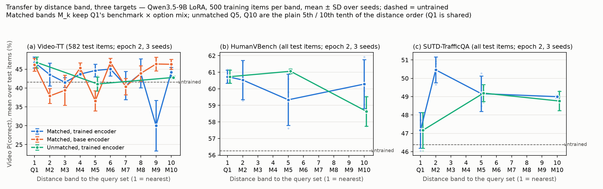
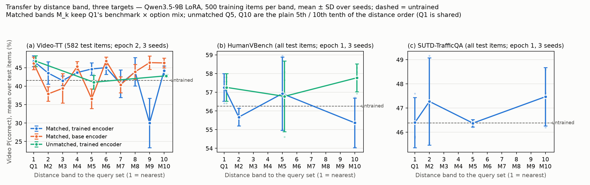
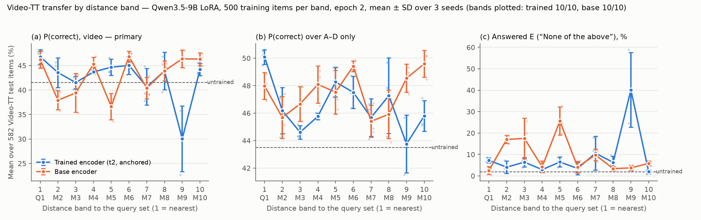
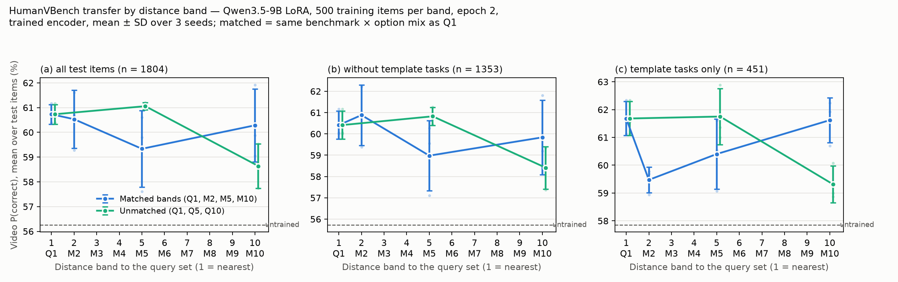
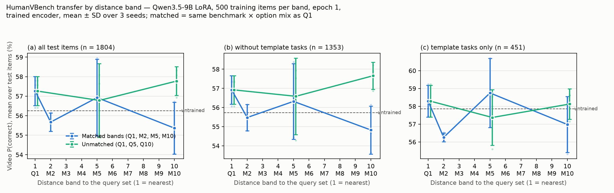
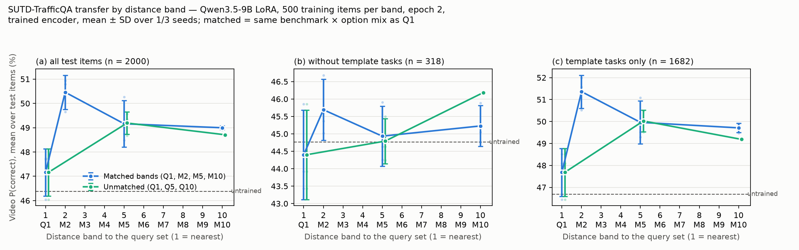
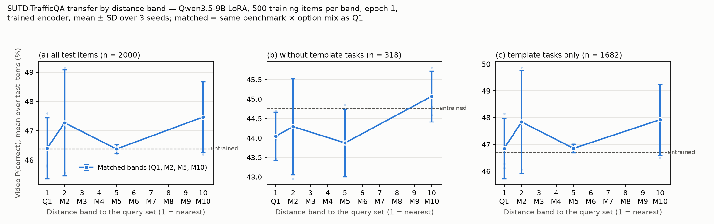

Distance-band transfer pilot: does training on the nearest questions transfer best?
Qwen3.5-9B LoRA fine-tuned on 500 video-QA training questions per arm, chosen by their distance to a target benchmark under the tree-aware skill encoder. Three targets: Video-TT, HumanVBench, SUTD-TrafficQA. Updated 2026-11-18. Hover over (or tap) any dashed termLike this. Each dashed term opens a definition and a note on how to read our numbers for it. for its definition and how to read our numbers.
Design in one paragraph
The 49k-question training pool is ordered by similarity to the target's query questions using the trained encoder (round-robin over queries; similarity = max-cosMax-cos. For a pool question, the highest cosine similarity between its encoder embedding and any of the target's query questions; averaged over the 500 questions of an arm.Reading ours: it orders the arms from near to far (trained encoder, HumanVBench: Q1 0.64, M2 0.57, M5 0.49, M10 0.35). It is a distance on the encoder's scale, not a measure of how useful the questions are.). That ordering is cut into tenths (bands 1 = nearest … 10 = farthest). Q1 is the first 500 questions of band 1. Matched bands Mk take 500 questions from band k with the same benchmark × option-count mix as Q1, so only distance changes. Unmatched arms Q5, Q10 are simply the first 500 questions of band 5 or 10, so their benchmark mix changes too. Each arm is trained with 3 seeds (2 epochs) and scored on the target's held-out test items, with video and without (blindBlind P(correct). The same test questions asked with the video withheld (the prompt says the video is not available).Reading ours: it measures what the model gets from the question text and answer priors alone. Blind is flat across bands on every target, so the video differences between arms are not text-prior shifts.).
Headline numbers (epoch 2)
Video P(correct)Video P(correct). For each test question, the model's probability on the correct option letter at the answer position (read from its log-probabilities), averaged over the target's test items. Higher is better; it is smoother than accuracy because it credits partial confidence.Reading ours: differences of about 1–1.5 points are within seed noise here (seed SD 0.1–3.0). Compare each arm with the dashed "untrained" line first: an arm that does not beat it learned nothing that transfers., mean ± SD over 3 seeds; all test items with frames.
| Target (test items) | Untrained | Q1 (nearest) | Matched M2 | Matched M5 | Matched M10 | Unmatched Q5 | Unmatched Q10 |
|---|---|---|---|---|---|---|---|
| Video-TT (582) | 41.5 | 46.8 ± 1.5 | 43.6 ± 3.0 | 44.7 ± 1.7 | 44.2 ± 1.3 | 41.1 ± 1.9 | 42.8 ± 0.4 |
| HumanVBench (1,804) | 56.3 | 60.7 ± 0.4 | 60.5 ± 1.2 | 59.3 ± 1.6 | 60.3 ± 1.5 | 61.1 ± 0.1 | 58.6 ± 0.9 |
| SUTD-TrafficQA (2,000) | 46.4 | 47.2 ± 1.0 | 50.5 ± 0.7 | 49.2 ± 1.0 | 49.0 ± 0.1 | 49.2 ± 0.5 | 48.7 (1 seed) |
- Video-TT: Q1 is best. The unmatched far arms fall to the untrained level, while the matched bands keep about 3 points of the gain, so most of Q1's advantage over the unmatched far arms comes from training on Q1's benchmarks, not from distance alone.
- HumanVBench: the matched curve is flat. Unmatched Q10 (78% CLEVRER) is the lowest point, about 2 points under Q1 at epoch 2; at epoch 1 it is not lower.
- SUTD-TrafficQA: Q1 is the worst trained arm (−3.3 points vs M2). Unmatched and matched arms agree, so benchmark mix does not matter here. A separate analysis traced about 0.9 points of the Q1 deficit to answer-content priors Q1 learned (more "yes" answers).
- The nearest-band step seen on Video-TT does not replicate on the two new targets.
How different are matched and unmatched arms?
TV distanceTotal-variation (TV) distance between two benchmark mixes: half the sum of absolute differences in each benchmark's share. Equivalently, the share of the 500 questions that would have to change benchmark to turn one mix into the other. 0 = identical mix, 1 = no benchmark in common.Reading ours: matched bands are 0.00 by construction. Unmatched arms drift fast (≈0.3 at band 2, ≈0.5 at band 5, 0.66–0.96 at band 10), so an unmatched curve mixes "distance" with "which benchmark you trained on". of each arm's benchmark mix to Q1's (trained encoder):
| Target | Unmatched Q5 | Unmatched Q10 | Q10's top benchmarks | Shared texts, M10 vs Q10 |
|---|---|---|---|---|
| Video-TT | 0.58 | 0.93 | CLEVRER 82%, PhysBench 17% | 0 / 500 |
| HumanVBench | 0.54 | 0.96 | CLEVRER 78%, PhysBench 18% | 0 / 500 |
| SUTD-TrafficQA | 0.48 | 0.66 | TemporalBench 32%, VELOCITI 27% | 59 / 500 |
Matched bands: TV 0.00 to Q1 by construction. Unmatched arms also sit farther from the target in max-cos (HumanVBench band 10: matched 0.35, unmatched 0.21).
Figures
Blue: matched bands (Q1, M2 … M10), trained encoder. Orange (Video-TT only): matched bands chosen by the frozen base encoder. Aqua: unmatched arms (Q1, Q5, Q10), offset slightly right. Faint dots: individual seeds. Error bars: ±1 SD over seeds. Dashed: untrained model.







The encoder that chose the bands
Tree-aware skill encoder t2_w0_lam0.0003_ep5: gte-modernbert-base, fully fine-tuned to place each question near the
skill-tree nodes (L3 skills and their L2 parents) it was labelled with, with an anchor term (λ = 0.0003) that keeps it correlated
with the untrained model. Tier-2 training data; epoch 5 chosen by a pre-registered rule (smallest λ keeping base r ≥ 0.5 at every epoch).
Validation metrics (held-out validation questions, original wordings)
| Metric | Frozen base | Trained (epoch 5) |
|---|---|---|
| Node AUROC (training wording)Node AUROC. For each skill node, rank all validation questions by cosine(question, node name). AUROC is the probability that a random question labelled with that node is ranked above a random question that is not (0.5 = chance, 1 = perfect). Macro-averaged over nodes with validation positives.Reading ours: 0.987 vs 0.778 for the base model: the encoder retrieves its own skill labels almost perfectly. This shows it learned the label space; it does not show that the labels predict fine-tuning transfer (see the grid test below). | 0.778 | 0.987 |
| Node AUROC (held-out wording)Node AUROC, held-out wording. The same AUROC, but each node is described by a paraphrase of its name never used in training.Reading ours: 0.977, only 0.01 below the training wording: the encoder learned the skills, not the exact node strings. | 0.779 | 0.977 |
| selsel (checkpoint-selection score). Spearman rank correlation between question–question cosine and graded label similarity, over pairs of single-skill validation questions: same L3 skill = 1, sibling L3 under the same L2 = 0.5, different L2 = 0.Reading ours: 0.403 vs 0.215: question similarity tracks shared skills about twice as well as the base model, but the correlation is moderate. Many same-skill pairs still look dissimilar and vice versa. | 0.215 | 0.403 |
| Ochiai SpearmanOchiai Spearman. Spearman correlation between question–question cosine and the Ochiai overlap of the two questions' skill sets (|A∩B| / √(|A|·|B|) over L3 and L2 nodes), over all validation pairs, including multi-skill questions.Reading ours: 0.517 vs 0.263. Same story as sel on the harder, multi-label pairs: a real but partial alignment between geometry and skill overlap. | 0.263 | 0.517 |
| base rbase r. Pearson correlation between the trained encoder's pairwise cosines and the frozen base model's, over validation pairs. The anchor term keeps it from drifting too far.Reading ours: 0.602. The encoder keeps a good part of the base model's general semantic geometry (the rule required ≥ 0.5), so its distances mix "shares a skill" with "is about similar content". | 1.000 | 0.602 |
| Within-set spread (× base)Within-label-set spread. Mean (1 − cosine) between questions with an identical skill set, relative to the base model. A collapse check: values far below 1 would mean the encoder squashes all questions of a skill into one point.Reading ours: 1.44: no collapse. Same-skill questions are actually more spread out than under the base model, so the encoder still distinguishes questions within a skill. | 1.00 | 1.44 |
Other encoders we trained (for comparison only)
| Encoder | TierTier. Which training set: tier 1 uses every labelled training question; tier 2 holds out 16 sibling L3 skills entirely (for the held-out-skill test), so it has fewer questions and a different validation split.Reading ours: validation numbers are only comparable within a tier, because the two tiers validate on different questions (compare each row with its own tier's frozen-base row). | w | λ | Checkpoint (step) | Node AUROC train / held-out wording | sel | Ochiai Spearman | base r | Spread (× base) | Grid CV R² (form B)Grid CV R², form B. The same transfer-prediction test as the table below (56 arms × 124 targets, video gains), run on each checkpoint. Bar to beat: 0.065.Reading ours: post hoc for these checkpoints (only the anchored encoders were pre-registered). No encoder beats 0.065; the best are the tier-2 runs at 0.061. Grid R² rises with sel, except for the collapsed w = 1 run. |
|---|---|---|---|---|---|---|---|---|---|---|
| Used: tier-2 anchored (t2_w0_lam0.0003_ep5) | 2 | 0 | 0.0003 | epoch 5 (3,879) | 0.987 / 0.977 | 0.403 | 0.517 | 0.602 | 1.44 | 0.061 |
| Tier-2 unanchored (t2_w0_lam0) | 2 | 0 | 0 | best sel (3,799) | 0.987 / 0.976 | 0.402 | 0.516 | 0.496 | 1.42 | 0.061 |
| Frozen base, tier-2 validation | 2 | – | – | – | 0.778 / 0.779 | 0.215 | 0.263 | 1.000 | 1.00 | 0.008 |
| Tier-1 unanchored (t1_w0_lam0) | 1 | 0 | 0 | best sel (5,744) | 0.990 / 0.979 | 0.426 | 0.574 | 0.431 | 1.47 | 0.059 |
| Tier-1, w = 1, unanchored (t1_w1_lam0) | 1 | 1 | 0 | best sel (3,199) | 0.970 / 0.950 | 0.459 | 0.681 | 0.347 | 0.51 | 0.024 |
| Tier-1, w = 1, λ = 1 (t1_w1_lam1) | 1 | 1 | 1 | best sel (1,399) | 0.934 / 0.917 | 0.277 | 0.277 | 0.974 | 0.82 | 0.011 |
| Tier-1, w = 1, λ = 3 (t1_w1_lam3) | 1 | 1 | 3 | best sel (1,399) | 0.895 / 0.880 | 0.262 | 0.245 | 0.975 | 0.87 | 0.011 |
| Frozen base, tier-1 validation | 1 | – | – | – | 0.788 / 0.787 | 0.241 | 0.225 | 1.000 | 1.00 | 0.008 |
All runs: gte-modernbert-base, full fine-tuning, 5 epochs at most. The w = 1 runs and the λ = 1 / 3 runs come from the first trial grid, which used early stopping on sel (patience 5 × 200 steps), so they stopped early. Grid R² for every row except the used encoder is post hoc (not a pre-registered test). Unmentioned trial runs (w = 0 with λ 0.001–3, and longer 10-epoch runs) are in the project log.
Grid test: does encoder similarity predict measured transfer?
The pre-registered test uses a separate grid of measured fine-tuning gains: 56 training arms × 124 target sets, Qwen3.5-9B. Each arm–target cell is predicted from the encoder's similarity between the arm's questions and the target's items (form BForm B. The arm–target feature: cosine between the arm's mean embedding direction and each target item, averaged over the target's items. Forms A (mean of all pairwise cosines) and C (centroid to centroid) are reported as sensitivity checks.Reading ours: form A does slightly better (0.068) and C worse (0.042); none changes the conclusion.).
| Test (video gains) | Full grid (124 targets) | 16 held-out L3 targets |
|---|---|---|
| CV R², encoder aloneCross-validated R². Share of the variance in arm–target gains explained, estimated by leave-one-arm-out cross-validation with target fixed effects (each target's average gain is removed, so only which arm helps which target counts). 0 = no better than target averages; the floor under this CV is −0.037.Reading ours: 0.061 on the full grid: the encoder explains about 6% of arm-to-target variation in transfer. Small in absolute terms; most of what decides transfer is not captured by question similarity. | 0.061 | 0.103 |
| Bar: skill tree + semantic clusters + embeddingThe bar. CV R² of the existing baselines together: skill-tree relations, semantic-cluster relations and an off-the-shelf embedding similarity. The pre-registered primary test asks whether the encoder alone beats this.Reading ours: 0.065 on the full grid and 0.409 on held-out targets. The encoder alone does not beat it (p 0.62 and 0.985): it is not a better transfer predictor than the cheap baselines combined. | 0.065 | 0.409 |
| Beats the bar? (sign-flip p)Paired sign-flip test. For each training arm, compare the prediction error of the encoder model and the baseline model; randomly flip the signs of these per-arm differences 5,000 times to get a one-sided p-value for "the encoder is better". Also reported: how many of the 56 arms are predicted better.Reading ours: no on both (p 0.62, 29/56 arms better; held-out p 0.985, 22/56). A coin flip over arms. | no (p 0.62) | no (p 0.985) |
| Adds over baselinesAdds. Increase in CV R² when the encoder feature is added to the five baseline predictors, with a permutation test (encoder values shuffled across arms, 500 permutations).Reading ours: +0.011 (0.065 → 0.075, p 0.002, the smallest p 500 permutations can give): on the full grid the encoder carries some information the baselines lack. On the held-out L3 targets it adds nothing (−0.002, p 0.61). | +0.011 (p 0.002) | −0.002 (p 0.61) |
| Beats frozen base encoderControl. The same form-B test with the untrained gte-modernbert-base (same input format and pooling). It separates "training helped" from "format or pooling changed".Reading ours: training clearly helped: +0.053 R² over the frozen base (p 0.0004, 39/56 arms), +0.10 on held-out targets (p 0.018). | +0.053 (p 0.0004) | +0.101 (p 0.018) |
| Same, blind gains: encoder alone / adds | −0.002 / +0.008 (p 0.002) | — |
Together: the encoder learned the skill labels very well (node AUROC 0.99) and beats its untrained version at predicting transfer, but it does not beat the existing baselines, and the band pilot above shows that its nearest band beats matched farther bands on one target out of three.
Setup details
- Training: Qwen3.5-9B, LoRA, 2 epochs, 16k-token batch budget, original wordings only; adapters saved at epochs 1 and 2; 3 seeds per arm; one A100 80 GB per arm.
- Input: video at 2 fps (median 14 frames per question on HumanVBench, 10 on SUTD-TrafficQA), frames sent at 480×270 (processor sees 480×256, about 69 tokens per frame); model revision c2022362; prompt ends "Answer with the most likely option's letter."
- Scoring: one question per request; P(correct) read from the option-letter log-probabilities; test items with frames only. Template tasks (many questions generated from one template) are kept, and reported with and without.
- Encoder arms: only the trained encoder's arms were trained on HumanVBench and SUTD-TrafficQA; Video-TT also has base-encoder bands.
- Data: no benchmark questions, answers or videos appear on this page; only aggregate scores. SUTD-TrafficQA is used under its non-commercial research terms.